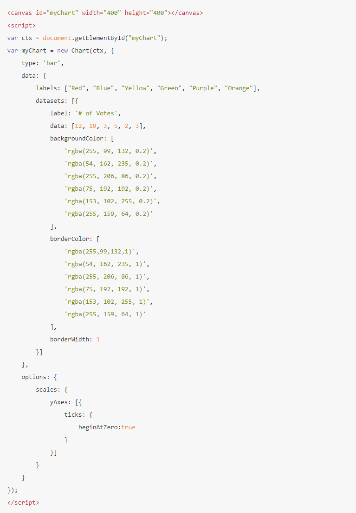
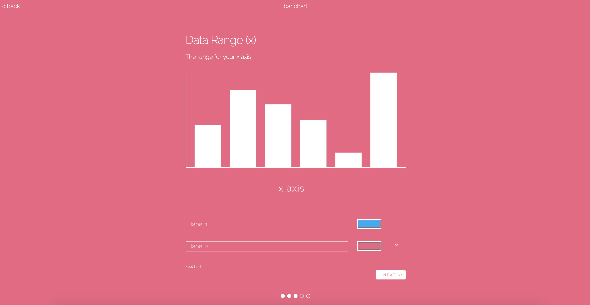
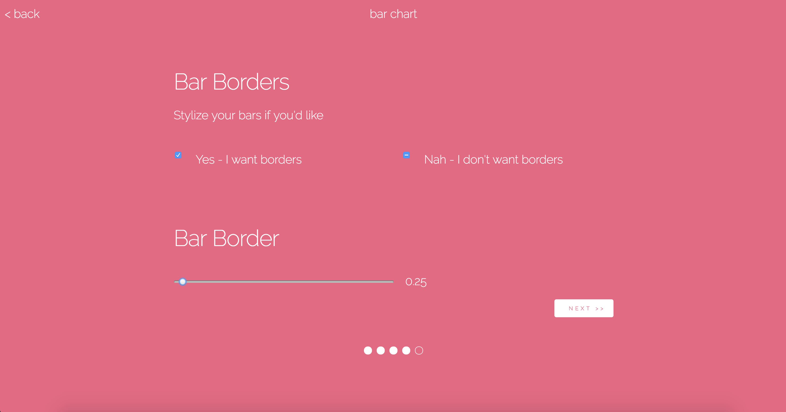
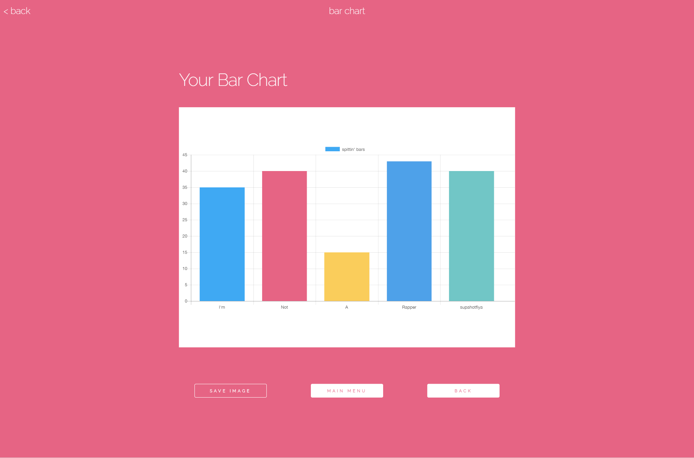

Chartly
Role: Side Project
Duration: 3 weeks
Chartly is a project that I wanted to experiment with further developing this sort of broken down or progressive workflow. Granted, this was during the time I made VIEWFINDER, so I was still really fascinated by such a concept that I wanted to apply it to another project. I wanted to experiment with providing small steps to a user to help them accomplish something, in this case it was a way to create a chart. I wanted to play with Chart.js because I thought it was so pretty of a library, and I found that it was just a fat JSON config file to render a chart. So I wanted to design something and prototype it from paper prototypes to actually something that can run in chrome.
Problem
During my time in school, I found a few instances that I had to make random mock charts or make static mock UIs on illustrator for prototyping with Invision, and sometimes when it came to creating tables or showing data, I did not want to draw out a chart or table by hand. I found myself in situations where I would just stop in my workflow because I was really bad at pulling numbers out of thin air. I found myself stumped because of a chart, which can seem trivial, but sometimes having a somewhat relevant chart could help make a user test feel a little more "real."
 Chart.js sample JSON - Who wants to deal with that every time they want to make a chart?I also found that Chart.js was a really cool library, but it would not really be accessible to someone without a technical background. Since Chart.js is a javascript library, it would take some sort of setting up, and on top of that, it would require a user to provide a proper JSON config file for it to output a chart. This process would take time to read documentation and plugging and chugging values for an output.
Solution
My solution to wrangling Chart.js with a JSON config as well as providing a quality of life improvement over BSing diagrams or charts for prototypes that need some sort of data visualization. So I figured that someone on this planet (even if it were just me) could benefit from a tool that could configure and create a chart for you. The solution was simple: break down the JSON to "chunks" that could be prompted to the user: a system would break down the configuration to bite sized steps so that they can all be compiled to one full JSON that would render a chart.
A user would follow a typical flow for using Chartly:
- Select a type of chart they would like to make
- Enter chart title
- Enter max & min values related to chart (for random number generation)
- Add style attributes like color, border, etc.
- Save, copy, or redo the chart!
Process
Chartly was a project that I tried to take it from paper prototype all the way to a working prototype in chrome. I wanted to not only work fast, but I also wanted to get past just using InVision, but also making as close to the real thing as I could. I wanted to see how far I could develop some sort of working prototype with the javascript and web design knowledge I had while still delivering something that would be easy to use and somewhat pratical. Furthermore, I wanted to make something that could try and abstract a javascript library so that a non technical person could still produce aesthetically pleasing charts for whatever assets they need.
Things I focused on:
- Starting from paper prototype to a functioning web page
- Chartly acts as a medium for users to interface with Chart.js
- Progressive like workflow, guiding the user through a step by step process
- Responsive and mobile first design
- Various forms of input
Inspiration
Part of the inspiration for Chartly was Airbnb’s flow for searching for house listings. I really enjoyed how it guided the user step by step and also removed the distractions of filling out a huge form. I really wanted to replicate something like this, and from a high level point of view, Chartly is just a fancy UI that configures and provides a bunch of parameters to Chart.js, which then spits out a chart that a user could download from. However, I did not want to have the user be overwhelmed by a “huge” list of parameters that they needed to choose from in order to produce a functioning chart or graph. As a side note, looking back at this project, I still find these issues relevant to my life: when it comes to configuring a component from a ui library, it may be hard to figure out what can be done or how it is done. Things like StoryBook can show realtime as to what can be configured. As for Chartly, I wanted to make this process as frictionless as possible, without requiring the user to have any technical knowledge or a dataset handy in order to make their chart.
 Airbnb's sample flow
Airbnb's sample flow
Screen Prototypes
First I started out with some paper prototypes, and overall I just tried to keep it simple: I had a home page with a few options for what chart a user wanted. Chart.js has a wide variety of charts to pick from, but I just decided to stick with a few of the popular ones: line, bar, radar, and pie chart. From my paper prototypes, I focused on iterating through the pie chart flow. I want to point out that this layout is very similar to that of VIEWFINDER since the home page has a few action items as well as a help button to educate the user what the app does, and the app also has a progress bar/counter at the bottom of each step. Overall, most individuals liked the idea, so I simply moved on to the screen designing and invision prototype.
When I made the homepage, I was still in the “parallax” phase, but not so much with moving pictures. I just wanted to background that filled the page, and I squiggled some lines that reminisced a line graph and intersected them at one point and layered them with colors so that it looked like a chart. I wanted Chartly to look playful and welcoming, and I really wanted to do something that didnt have a white, grey, or black background. Since Chart.js has a really vibrant color scheme, I decided to adopt a handful of their colors and have the primary color be pink for the background.
From there, I decided to make the help screen, as I wanted to at least have some sort of explanation to the user before or during the time they used the app. The help screen was quite simple: it had some text explaining what Chartly does, and it also has a short blurb of what each chart could be used for. This help page is accessible through the landing page or the home page. As for the menu page, the user is given four options, and each would roughly follow the same type of flow when creating the respective chart.
Initial Feedback
When it came to making all of the screens for invision and then sequentially user testing the design on a few people, most of the feedback was positive; however people pointed out that for all my graphs, they should try to follow the same steps. For example, every chart should start out with asking for the name, so that things could remain consistent. Another issue that I discovered was that I should combine the color and the label for a certain data point. I don’t have a picture to show what it was before, but I broke up the steps so that the user would first provide label names for something like each bar in the bar graph, and the next step would be to assign colors. This was remediated by thus combining both inputs: allowing the user to create a label name along with a color.
Web Development // Prototype
For web design and development portion of the project, I decided to focus most of my efforts on just perfecting one workflow: the bar chart, as it would be interesting to ask the user if they wanted a border, color for each bar, etc, and I got to experiment with styling inputs so that it would provide the user an easier way to configure their chart. As mentioned earlier, Chartly is a medium that allows a user to interface with Chart.js, so most of the inputs took a slice of the json object that Chart.js needed and was responsible for that piece. As each of the inputs are filled out, Chartly updates the json step by step and thus creating a chart for the user.
The next section was for the y-axis of the bar graph: what was the min and max values of the bar graph. I created a small image so that the user knew what the min and max values correspond to for the bar graph. Then, Chartly asked for the number of bars needed in the graph. This was done in a way so that the first bar was default mandatory to make the chart. Thus, the first bar input was populated, and there is an option to add more bars. With each consecutive bar input added, there would be an X to allow the user to remove them. Each bar input consisted of a bar name (text field) and a color (color picker). I had a set list of colors (maybe 10) that would just be automatically set just so the user would not have to spend time on picking colors, but I added the color picker to allow the user to choose their colors if they wanted to do so. Similar to the the y-axis inputs, I added a graphic to show that the inputs were for the x-axis.
After the number of bars were determined and the min max values, the chart essentially could have been generated. However, the last argument needed for a chart was if the user wanted a bar border or not. There was a default value associated to Chart.js, so it was not a required value, but I wanted to play around styling a slider. I wanted to incorporate a slider that displayed when the user checked “Yes” for the borders. When the slider moved up and down, an integer would increase or decrease based on the range, which corresponds to how thick the borders were. I struggled with trying to figure out a way to show the line thickness, as I first thought the integer values were enough. I thought about showing something in addition of the integer increasing or decreasing like an actual bar with a border increasing or decreasing with border size, but due to the interest of time, I just went without adding anything, as I wasn’t even sure what the unit was or what a typical user would think it would be. Once the border thickness was set, the user would be able to see the chart. From there, the user could save/copy the chart, edit the chart, or go to the main menu.
Under the hood, Chartly runs a random number generator that takes the min and max values and based on how many bars are needed an integer, name, color, and border thickness are assigned to each bar. I made Chartly with a bunch of javascript functions that were added on to the onClick event handlers for each button I had. For example, every time “add label” was clicked during the x-axis portion of the bar chart, a javascript function would manipulate the DOM so that another bar label would be added. Every time a user clicked “next” during the step flow, Chartly would essentially hide a div and show a new div (how primitive! I know). When I made chartly, I thought about using a framework like AngularJS, but when it came down to configuring the project and stringing everything together, I simply got bogged down by the technologies, so I decided to just do everything in plain old javascript, and no jQuery. This definitely was not the most efficient use of my time at first, but when it came to making something fast, I was able to produce this in a matter of days, and the bulk of the time spent coding was just making sure I was able to properly configure a json object to pass into Chart.js to produce a chart or styling my inputs so that they looked like my designs.